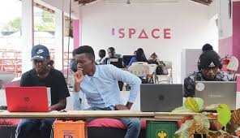
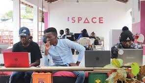

Gallery
 |
 |  |
 |
I am the CEO & Co-Founder of iSpace Foundation, an innovation hub based in Accra supporting Tech and Creative Startups and Entrepreneurs through Technology and Business/Entrepreneurship Training, Mentoring and a Co-Working Space.
Before devoting my work full-time to iSpace Foundation, I served as Business Development Director at Learning Without Frontiers, a global platform for disruptive thinkers and practitioners from the education, digital media, technology and entertainment sectors whose clients included Apple, Samsung, Nintendo and the UK Government.
business development, Communication Strategy, Marketing and Sales Strategy, online and offline marketing, Operational Management
I holds an HND in New Technology, Media and Communication from University of East London and a Business Management degree with the open university. I was previously the Events and Business and Development Manager for Learning Without Frontiers, a global platform for thinkers and practitioners from the education, digital media, technology and entertainment sectors who come together to explore how new disruptive technologies can drive radical efficiency and importance in learning whilst providing equality of access.
|
 | |
|